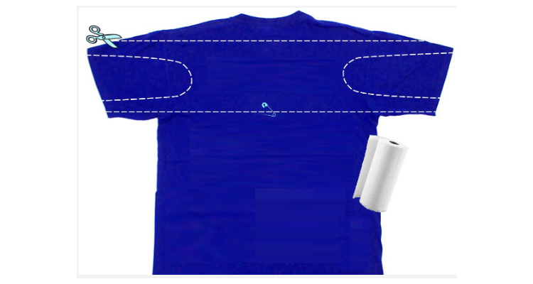
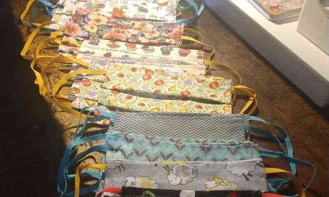
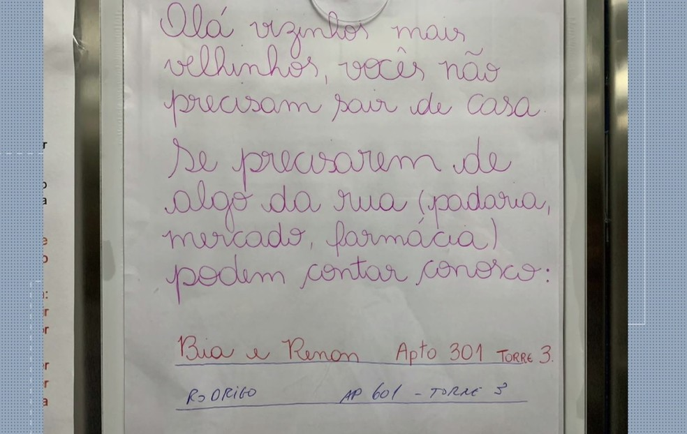

Notícias em Destaque sobre a  Covid-19
Covid-19

Máscaras caseiras podem ajudar na prevenção contra o Coronavírus
Leia mais

Redes 'invisíveis' ampliam ações de solidariedade em BH
Leia mais

Vizinhos oferecem ajuda para fazer compras para idosos, em Curitiba
Leia mais

Coronavírus: quem está ganhando dinheiro com a epidemia
Leia mais
Coronavírus - o que as crianças querem saber
Leia mais
Como se prevenir do novo coronavírus
Leia mais